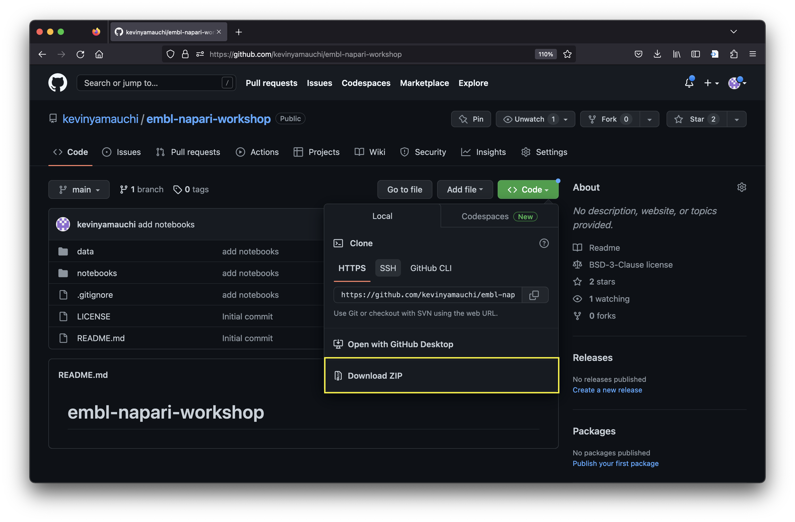
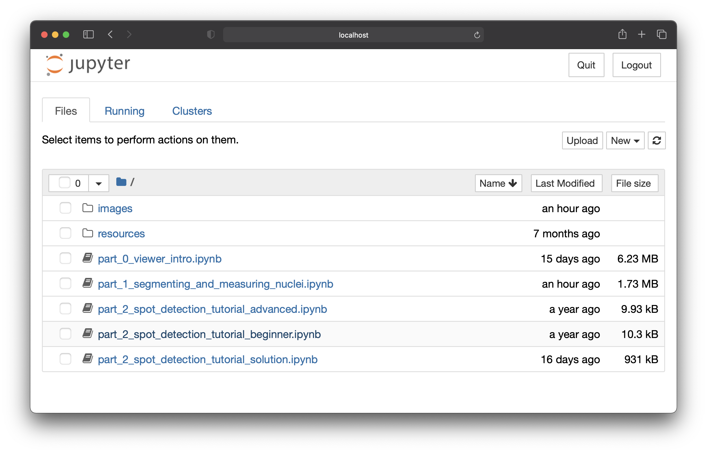

Downloading and launching the notebooks#
Downloading the notebooks.#
During this tutorial, we will be working through a set of notebooks. On this page, we will download the notebooks and launch jupyter notebook. There are two ways to download the notebooks: download as a .zip from github. Follow the instructions below for either “downloading zip” (recommended for beginners) or “cloning via git”.
Downloading .zip#
You can download the notebooks as a .zip file. To do so, please do the following:
Navigate your web browser to kevinyamauchi/embl-napari-workshop
Click the green “Code” button to open the download menu and then “Download ZIP” 
Choose the location you would like to download the .zip.
Open your file browser and double click on the .zip file to uncompress it.
You have downloaded the notebooks! Proceed to the “Launching jupyter notebook” section.
Cloning via git#
You can use git to clone the repository containing the tutorial materials to your computer. We recommend cloning the materials into your Documents folder, but you can choose another suitable location. First, open your Terminal navigate to you the folder you will download the course materials into
cd ~/Documents
and then clone the repository. This will download all of the files necessary for this tutorial.
git clone https://github.com/kevinyamauchi/embl-napari-workshop.git
Launch jupyter notebook#
Open your terminal and navigate to the notebooks subdirectory of the embl-napari-workshop directory you just downloaded.
cd <path to embl-napari-tutorial>/notebooks
Now activate your napari-tutorial conda environment you created in the installation step.
conda activate napari-tutorial
We will perform the analysis using Jupyter Notebook. To start Jupyter Notebook, enter
jupyter notebook
Jupyter Notebook will open in a browser window and you will see the following notebooks:
part_0_viewer_intro.ipynb: in this activity, you will gain familiarity with loading and viewing images in napari.part_1_segmenting_and_measuring_nuclei.ipynb: in this notebook, you will usestardistto segment mitochondria andnapari-clusters-plotterto measure` them.part_2_spot_detection_tutorial_<beginner, advanced, solution>.ipynb: in this notebook you will write a custom function to perform spot detection.
